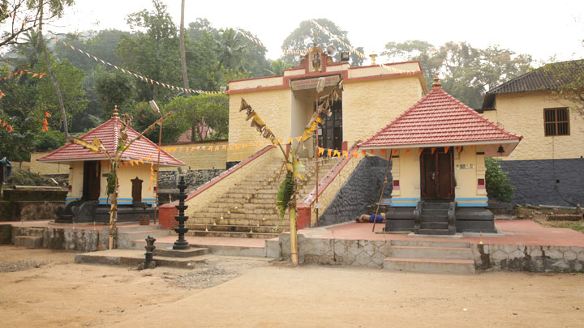

Top Destinations

Achancoil

Alumkadavu
Kollam is an ancient seaport and city on the Malabar Coast of India bordering the Laccadive Sea, which is a part of the Arabian Sea. It is 66 km (41 mi) north of the state capital Thiruvananthapuram. The city is on the banks of Ashtamudi Lake and the Kallada river.
Kollam has a strong commercial reputation since the days of the Arabs, Phoenicians, Chinese, Ethiopians, Syrians, Jews, Chaldeans and Romans. Fed by the Chinese trade, it was mentioned by Ibn Battuta in the 14th century as one of the five Indian ports he had seen during the course of his twenty-four-year travels. Desinganadu's rajas exchanged embassies with Chinese rulers while there was a flourishing Chinese settlement at Kollam. In the ninth century, on his way to Canton, China, Persian merchant Sulaiman al-Tajir found Kollam to be the only port in India visited by huge Chinese junks. Marco Polo, the Venetian traveller, who was in Chinese service under Kublai Khan in 1275, visited Kollam and other towns on the west coast, in his capacity as a Chinese mandarin. Kollam is also home to one of the seven churches that were established by St Thomas as well as one of the 10 oldest mosques believed to be found by Malik Deenar in Kerala.
Kollam is an ISO 9001:2015 certified city corporation for the best Municipal administration and services. As per the survey conducted by Economist Intelligence Unit (EIU) based on urban area growth during January 2020, Kollam became the tenth fastest growing city in the world with a 31.1% urban growth between 2015 and 2020. It is a coastal city on the banks of Ashtamudi Lake that took the title God's Own Country. The Ashtamudi Lake lie about 71 km (44 mi) north of the state capital, Thiruvananthapuram. The city hosts the administrative offices of Kollam district and is a prominent trading city for the state. The proportion of females to males in Kollam city is second highest among the 500 most populous cities in India. Kollam is one of the least polluted cities in India. Four major trading centres around Kollam are Kottarakara, Punalur, Paravur, and Karunagapally. Kollam appeared as Palombe in Mandeville's Travels, where he claimed it contained a Fountain of Youth. During the later stages of the rule of the Chera monarchy in Kerala, Kollam emerged as the focal point of trade and politics. Kollam continues to be a major business and commercial centre in Kerala.
Achancoil
Alumkadavu